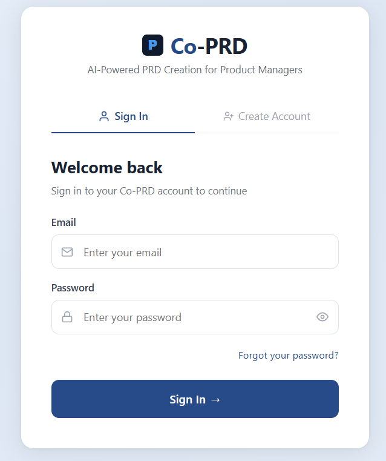
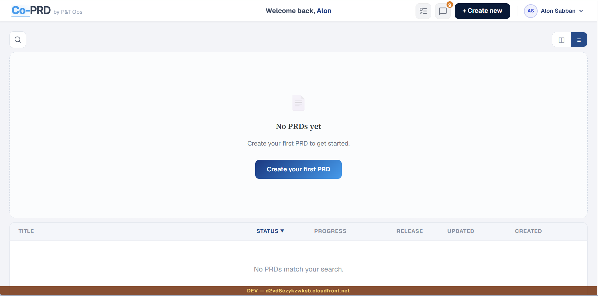
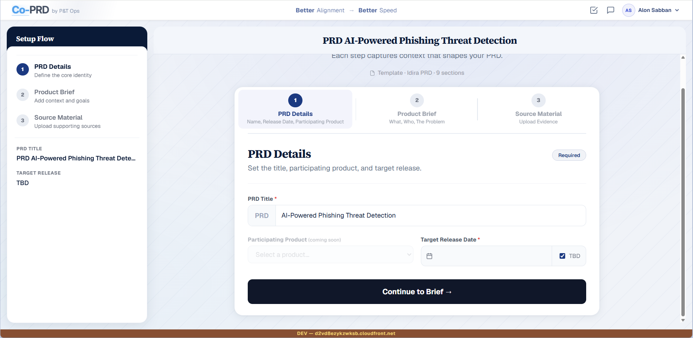
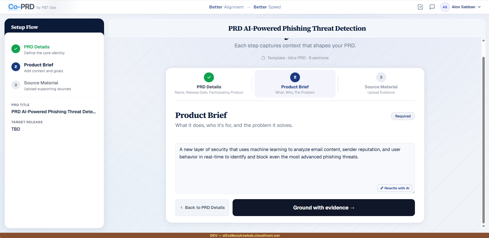
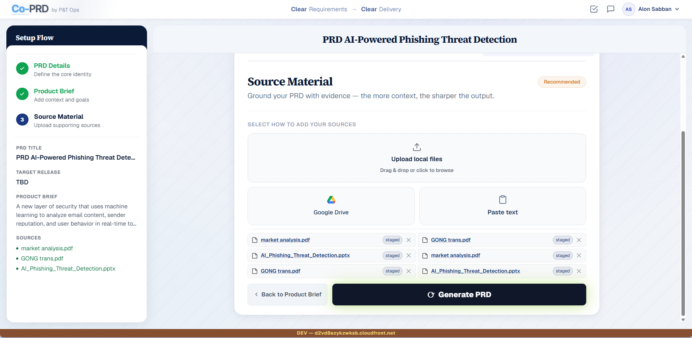
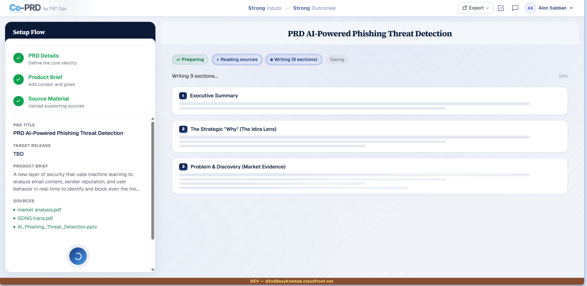
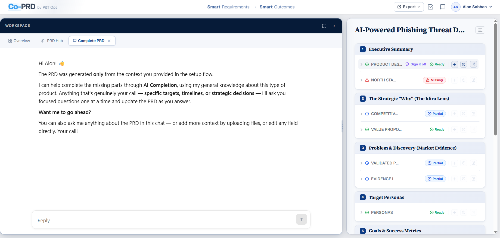
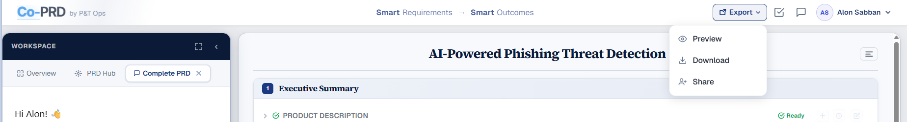
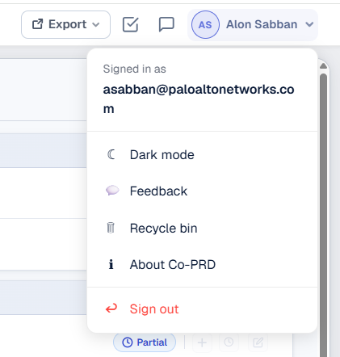

10-minute workshop intro
co-prd is an AI co-pilot that guides you step by step to a high-quality, consistent PRD — ready for RnD's ADLC process.









Questions? Use the feedback button inside the tool — or ask now.